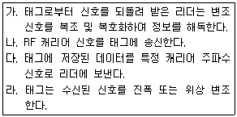
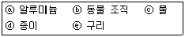
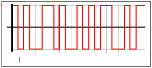
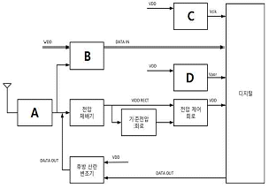
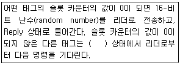
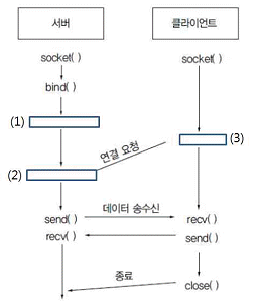
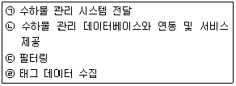
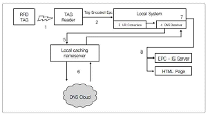
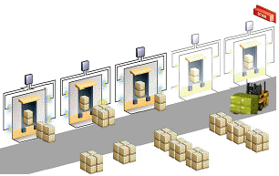
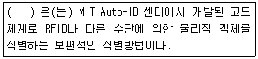

RFID-GL (2013-11-17 기출문제)
1과목: RFID 시스템 개요
1. 다음 중 RFID에 대한 설명으로 가장 거리가 먼 것은?
- 무선 주파수를 이용해 사물에 내장된 정보를 읽어 내는 기술이다.
- 전자 태그를 사물에 부착하여 언제나, 어떠한 상황에서도 항상 사물을 인식하거나 사물이 주의사항을 인지할 수 있게 한다.
- 기존 IT 시스템과 실시간으로 정보 교환ㆍ처리를 할 수 있게 한다.
- 각종 물류, 산업현장, 제조 공장 등에서 주로 적용 되고 있다.
(정답률: 63%)

2. 다음 중 일반적으로 RFID와 바코드의 차이점에 대한 설명으로 가장 거리가 먼 것은?
- RFID는 바코드에 비하여 비싸다.
- RFID는 무선 신호의 세기에 따라 거리를 조절할 수 있다.
- 바코드는 제한된 정보만을 제공할 수밖에 없다.
- RFID의 경우 수정 또는 재입력이 불가능하다.
(정답률: 78%)
3. 다음 중 일반적으로 많이 사용되는 리더와 수동형 태그의 동작 원리를 순서대로 옳게 나열한 것은?

- 가 - 나 - 다 - 라
- 나 - 라 - 다 - 가
- 가 - 나 - 라 - 다
- 나 - 다 - 라 - 가
(정답률: 66%)
4. 안테나로부터 일정한 거리에서 안테나 주변의 위치에 따라 복사 전계의 크기를 그린 것을 무엇이라고 하는가?
- 방사 패턴
- 실효 등방성 복사 전력
- 지향성
- 입력 임피던스
(정답률: 68%)
2과목: RFID 기술
5. 다음 중 전자파에 대한 설명으로 적절하지 않은 것은?
- RFID에 사용되는 주파수는 13.56MHz, 433MHz, 2.45GHz 등이 있다.
- 파장과 주파수는 상호 반비례 관계이다.
- 910MHz 주파수의 파장은 약 33cm이다.
- 유전체와 자성체로 구성되는 매질에서 빛의 속도로 진행한다.
(정답률: 59%)
6. 전자파의 송신기와 수신기 사이의 전달 경로에 대한 설명으로 옳은 것은?
- 도전성이 높은 큰 물체에 전자파가 입사되면 대부분 투과한다.
- 반사는 입사 전자파의 파장보다 큰 물체에 파가 입사될 때 일어난다.
- 송수신기가 가시거리 경로에 놓여 있지 않은 경우에도 산란에 의해 전파가 수신기에 도달한다.
- 회절은 파장에 비해 매우 작은 구조물들로 구성되는 매질을 전자파가 통과할 때 발생한다.
(정답률: 49%)
7. RFID 안테나의 전송 케이블과 커넥터에 대한 설명으로 옳지 않은 것은?
- 일반적으로 동축 케이블이 사용된다.
- 전송 선로 종단에 연결되는 부하 값에 관계없이 특성 임피던스 값은 동일하다.
- 전송 선로의 특성 임피던스로 50Ω과 75Ω이 흔하게 사용된다.
- UHF 대역에서 일반적으로 사용되는 커넥터는 50Ω용 SMA이다.
(정답률: 55%)
8. 다음 설명 중 RFID 기술에 대한 설명으로 옳지 않은 것은?
- 원거리에서도 물리적 접촉 없이 인식 가능하다.
- 스마트카드에 비해서는 메모리 용량이 크다.
- 일반적으로 많이 사용되는 수동형 태그의 송수신 형태는 자기장에 반응하여 동작하는 방법과 전자장에 반응하는 방법이 있다.
- 리더는 보통 컴퓨터나 PDA 등에 연결되어 운용되며, 응용 목적에 따라 운용 소프트웨어에 의해 RFID 시스템을 제어한다.
(정답률: 56%)
9. 리더와 태그 간의 데이터 전송 시 리더의 안테나는 고정되어 있고, 태그는 규칙성이 없는 임의의 방향으로 놓여 있다. 태그 안테나의 특성이 선형편파일 때 효율적인 데이터 수신을 위한 리더 안테나의 편파는 무엇인가?
- 선형 편파
- 원형 편파
- 수평 편파
- 수직 편파
(정답률: 62%)
10. RFID 태그가 부착된 물질의 종류에 따라 RFID 무선 신호가 투과할 수 있는 두께에 차이가 발생할 수 있다. 900MHz 주파수를 사용하는 경우 아래 물질 중 투과 두께가 큰 것에서 작은 것 순서로 나열하면?

- ⓑ > ⓒ > ⓔ > ⓐ > ⓓ
- ⓓ > ⓑ > ⓒ > ⓔ > ⓐ
- ⓓ > ⓒ > ⓑ > ⓐ > ⓔ
- ⓑ > ⓓ > ⓒ > ⓔ > ⓐ
(정답률: 57%)
11. 최근 RFID 분야에서 사용되는 칩리스(Chipless) 태그중 인쇄형 RFID 기술에 대한 설명으로 옳지 않은 것은?
- 일반적으로 저렴한 폴리머 소재를 많이 이용하며, 제조 기법도 비교적 간단하다.
- 반도체를 실리콘이 아닌 유기물로 제작하여 가격이 저렴한 것이 특징이다.
- 롤(roll-to-roll) 공정이 가능하여 안테나와 태그를 동시에 형성시킬 수 있다.
- 수동형에만 적용 가능한 단점이 있으나, 사용되는 유기물들의 안정성이 높아 시간 경과에 따른 성능 저하가 없다는 장점이 있다.
(정답률: 60%)
12. 다음 그림은 RFID 시스템에서 사용하는 부호화 방식중 맨체스터(Manchester) 방식으로 11개 비트의 디지털 정보를 디지털 신호로 변환한 결과이다. 아래 그림에서 첫 번째 비트값이 1이라면 2번째부터 9번째까 지의 8개 비트값을 16진수로 변환한 값은?

- B1
- 4E
- 3B
- CE
(정답률: 57%)
13. 다음 그림은 UHF 대역 수동형 RFID 태그의 아날로그 회로 구조를 나타낸 것이다. 그림에서 A에 들어갈 것은 무엇인가?

- 클록 발생기
- 정합회로
- 리셋회로
- 복조기
(정답률: 58%)
14. 안테나의 크기를 D, 파장을 λ라고 할 때, 근거리장과 원거리장의 경계는?
- 2D/λ2
- 2D2/λ2
- 2D/λ
- 2D2/λ
(정답률: 72%)
15. 다음 설명의 빈칸에 들어갈 태그의 상태는 무엇인가 ?

- Ready
- Acknowledged
- Arbitrate
- Open
(정답률: 52%)
16. 다음 중 태그의 TID 메모리 영역에 들어있는 정보가 아닌 것은 무엇인가?
- 태그의 클래스 확인자
- 오류 확인을 위한 CRC 코드
- 제작사
- 태그 모델 넘버
(정답률: 70%)
17. 다음 중 리더가 태그의 Access 과정에 사용하는 명령으로 설명이 잘못된 것은 무엇인가?
- Req_RN 명령 : 태그 메모리의 특정 뱅크에서 데이터를 쓸 때 사용
- Read 명령 : 태그 메모리의 특정 뱅크에서 데이터를 읽어 올 때 사용
- Kill 명령 : 태그를 무력화시켜 사용할 수 없도록 한다.
- Lock 명령 : 메모리 뱅크 또는 특정 비밀번호에 대해 읽기 및 쓰기 권한을 설정
(정답률: 60%)
18. 리더는 송신부, 수신부, 프로세서부로 나뉜다. 프로세서부의 기능으로 옳지 않은 것은?
- 미들웨어 시스템과 네트워크 통신을 제공한다.
- 리더의 기능을 제어한다.
- 리더의 메모리를 제어한다.
- 태그의 기본적인 OS(Operation System)를 제공한다.
(정답률: 60%)
19. 다음 중 리더 인터페이스에 대한 설명으로 옳지 않은 것은?
- 리더와 외부의 인터페이스는 용도에 따라 통신, 안테나, 테스트 포트 등으로 분류 할 수 있다.
- 테스트 포트는 리더의 정상 동작 여부 검증, 또는 소프트웨어의 수정을 위한 용도로 사용된다.
- 모노스태틱 리더의 안테나는 송신 전용으로 사용한다.
- 바이스태틱 리더는 송수신 안테나를 구분해서 사용한다.
(정답률: 68%)
20. RFID 리더의 송신부에 사용되는 전력 증폭기의 성능과 거리가 먼 것은?
- 이득(Gain)
- 효율
- 위상잡음
- 왜곡특성
(정답률: 47%)
21. 다음 중 리더 송신기 구조에 대한 설명으로 옳지 않은 것은?
- 가변 감쇄기(attenuator)를 사용하여 신호가 부드럽게 켜지고 꺼질 수 있도록 할 수 있다.
- 출력 신호는 잡음과 고조파(harmonics)를 제거하기 위해 필터링되어 태그 응답이 포함되어 있는 저주파 신호가 된다.
- 신호 변조는 전력 증폭기에 공급되는 바이어스 직류 전류를 변화시켜 신호의 크기를 조정할 수 있다.
- 위상변조 방식을 이용하면 잡음이 존재하는 상황에서 신호 인식률을 높이고 주어진 전송률에서 필요한 스펙트럼의 양을 줄일 수 있다.
(정답률: 26%)
22. 다음 중 가장 간단한 리더 송신기 구조의 구성요소가 아닌 것은?
- 반송파를 생성하는 주파수 합성기(synthesize)
- OOK(On-Off Keying) 변조하는 스위치
- 직접 변환 I/Q 복조기로 구성
- 충분한 출력 전력으로 증폭하는 증폭기
(정답률: 67%)
23. 수동형 RFID 리더 시스템에서 안테나와 송수신부를 분리해주는 회로는?
- 스위치
- 듀플렉서
- 서큘레이터
- PLL
(정답률: 70%)
24. 다음 중 리더 구성 부품에 대한 설명으로 옳지 않은 것은?
- RFID 리더는 후방 산란된 신호를 수신하기 때문에, 이들은 일반적으로 호모다인이 아닌 헤테로다인 구조로 설계된다.
- 무선 송신기는 정확하고, 효율적이며 주어진 주파수 범위 내에서 송신이 이루어져야 한다.
- 수신기는 감도와 선택성이 뛰어나고 다양한 크기의 신호를 잘 수신하여야 한다.
- RFID 리더는 반이중(half-duplex)과 전이중(full-duplex) 통신의 모든 문제를 동시에 포함하고 있어 바이스 태틱 구조를 택하는 것이 유리하다.
(정답률: 49%)
25. 송수신 안테나 사이에는 다양한 전파 환경이 존재할 수 있는데 이를 통칭하여 무선 채널이라 한다. 다음 중 무선 채널에 대한 설명이 잘못 된 것은 무엇인가?
- 무선 채널의 복잡성 정도에 따라 수신 안테나에 수신되는 신호는 왜곡된다.
- 수신 안테나에 수신되는 신호는 무선 채널의 복잡성 정도에 따라 왜곡되지만 수신 시스템에서 왜곡의 정도와 상관없이 그대로 복원된다.
- 수신 안테나에 수신되는 신호는 일반적으로 송신 안테나로 직접 받는 신호와 수신 안테나 주변의 물체들로부터 산란되는 여러 경로의 산란파 신호의 합으로 구성된다.
- 무선 채널을 모델링하는 방법에는 여러 가지가 있지만 확률 통계적 방법이 유효하다.
(정답률: 50%)
26. 다음 중 레이더 탐지 면적(RCS)을 결정하는 요소와 가장 거리가 먼 것은?
- 물체의 단면적
- 회로망 분석기
- 반사 특성
- 방향성
(정답률: 53%)
27. 특정 태그에서 입사의 전력 밀도가 4W/㎡이고 이 물체의 산란 단면적과 유효 면적이 각각 4㎡, 2㎡ 일 때 사방으로 산란된 총 산란 전력과 총 흡수 전력은 각각 얼마인가?
- 총 산란 전력 : 10 W, 총 흡수 전력 : 4W
- 총 산란 전력 : 16W , 총 흡수 전력 : 8W
- 총 산란 전력 : 1W , 총 흡수 전력 : 2W
- 총 산란 전력 : 2W , 총 흡수 전력 : 4W
(정답률: 53%)
28. 정진기 방전(ESD)은 RFID 프린터에서 문제의 큰 요인중 하나이다. 이에 대한 설명으로 옳지 않은 것은?
- 프린터뿐만 아니라 태그칩에 손상을 줄 수 있다.
- 라벨을 후면 보조시트에서 분리시킬 때 발생할 수 있다.
- 라벨을 제품에 부착할 때 방전될 수 있다.
- 루프 구조의 태그안테나는 ESD 발생 가능성을 증가 시킨다.
(정답률: 52%)
29. 다음은 TCP 소켓 프로그래밍이 동작하는 방식을 보여 준다. (1),(2),(3)의 빈칸에 들어갈 명령어들을 순서 대로 나열한 것은?

- listen() - connect() - accept()
- listen() - accept() - connect()
- accept() - connect() - listen()
- accept() - listen() - connect()
(정답률: 65%)
30. 다음 피드백 시스템 설명 중 잘못 된 것은 무엇인가?
- 피드백(Feedback) 시스템은 RFID 시스템의 장애를 감지하고 책임자 또는 백-엔드(Back-end) 시스템에 이러한 이벤트를 신호화 하거나 적절한 조처를 취하도록 프로그램될 수 있다.
- 선별기 또는 선별게이트는 태그에서 읽혀진 데이터를 근거로 컨베이어 또는 생산라인상의 제품 경로를 전환시키기 위해 사용된다. 또한 예외 처리를 위해 기능이 없는 태그와 함께 제품의 선별을 위해 사용 된다.
- 경광등을 리더기에 연결할 때 스파이크와 접지 루프로부터 보호되도록 반드시 릴레이나 PLC를 통하여 리더기의 I/O 포트에 연결되어야 한다.
- 버저는 보안 장치에 부착될 수 있고 고가 상품이 구내를 벗어날 때 추적하기 위해 감시용 CCTV 카메라와 연결되기도 한다.
(정답률: 55%)
31. RFID 리더 API에 대한 아래의 사항 중 가장 올바른 설명은 무엇인가?
- 사용자는 API에 맞는 언어로 중간 매개체인 래퍼(Wrapper)를 제작하여 이를 다시 적절하게 자신이 개발하고 있는 응용 애플리케이션에서 반드시 호출하여 사용하여야 한다.
- 래퍼(Wrapper)를 사용하는 경우 복잡성이 증대되고 문제가 발생했을 경우 그 원인을 찾기 어려울 수 있다.
- 래퍼(Wrapper) 제작의 경우 상대적으로 개발 난이도가 낮아 적절히 수행할 수만 있다면 가장 높은 성능을 발휘할 수 있는 방법이다.
- 현재 사용하고자 하는 리더가 OSI 7 계층 중 전송계층에서 응용 계층까지의 Host 계층을 지원하고 있다면 반드시 드라이버를 두어야 한다.
(정답률: 36%)
32. 다음 중 RFID 미들웨어의 데이터 필터링 기능으로 옳지 않은 것은?
- 중복 인식 데이터 제거
- 부정확한 인식 데이터 교정
- 데이터 암호화
- 데이터 분류
(정답률: 68%)
33. 다음 중 RFID 미들웨어의 활용 효과로 볼 수 없는 것은?
- RFID 어플리케이션 개발 기간 단축
- RFID 데이터의 수작업 입력에 발생하는 오류 감소
- RFID 태그 데이터 리더에 발생하는 오류 감소
- RFID 정보 공유 효과
(정답률: 32%)
34. ECSpec을 처리하는 ALE 실행 환경을 만들기 위해 관리자가 해야 할 일이 아닌 것은?
- RFID 리더의 설치 및 설정
- RFID 미들웨어 구동
- ECSpec 전송
- 클라이언트 응용 소프트웨어 개발/설치 및 설정
(정답률: 46%)
35. ALE 규격의 ECSpec에서 지정하는 리더 이름으로 가상리더(Logical Reader)를 사용한다. 가상리더의 장점에 대한 다음 설명 중 맞지 않은 것은?
- 가상리더에 속한 물리적 리더가 추가되더라도 응용 소프트웨어의 수정이 필요없다.
- 가상리더에 속한 물리적 리더가 교체되더라도 응용 소프트웨어의 수정이 필요없다.
- 가상리더에 속한 물리적 리더가 추가되더라도 미들웨어의 설정을 변경할 필요가 없다.
- 물리적 리더들을 묶어서 가상리더로 명명할 수 있어 관리가 편리해 진다.
(정답률: 37%)
36. RFID 미들웨어의 대표적인 응용 사례인 항공 수하물 관리 서비스의 구성 순서로 옳은 것은?

- (ㄹ) → (ㄷ) → (ㄱ) → (ㄴ)
- (ㄴ) → (ㄹ) → (ㄷ) → (ㄱ)
- (ㄹ) → (ㄱ) → (ㄴ) → (ㄷ)
- (ㄷ) → (ㄱ) → (ㄹ) → (ㄴ)
(정답률: 41%)
37. 다음 EPCIS의 기능에 대한 설명 중 가장 거리가 먼 것은?
- EPCIS는 기업들의 필요에 따라 적절한 보안 메커니즘를 결합해서 사용할 수 있다.
- EPCIS는 어떤 방법으로 필요한 데이터를 구하는지를 정의하지 않는다.
- EPCIS는 서비스 오퍼레이션(service operation) 이나 데이터베이스가 어떤 식으로 실행되어야 하는지를 정의하지는 않는다.
- EPCIS는 EPCglobal 아키텍처에서 EPC 태그와 리더 프로토콜의 하위 레벨에 존재한다.
(정답률: 55%)
38. 다음 중 EPCIS의 이벤트(Event) 데이터와 마스터(Master) 데이터 타입에 대한 설명 중 맞는 것은?
- 이벤트 데이터는 비즈니스 프로세스를 수행하는 과정에서 발생하는 데이터로 EPCIS Capture Interface를 통해 수집될 수 있다. 마스터 데이터는 이벤트 데이터에 필요한 문맥(context)을 제공하는 추가적인 데이터이다.
- 이벤트 데이터는 일반적으로 특정 순간과는 일반적으로 관련이 없다.
- 마스터 데이터 타입은 데이터 기본구조의 의미를 나타내며 실시간으로 비즈니스 프로세스를 수행 중 실시간으로 발생하는 데이터를 저장한다.
- 마스터 데이터는 시간에 따라 변화하는 정보를, 이벤트 데이터는 변화하지 않는 정보, 즉 주소 정보 같은 것을 나타낸다.
(정답률: 49%)
39. 다음 중 RFID ODS에 대한 설명으로 거리가 먼 것은?
- National ODS는 코드에 대한 Local ODS의 위치 정보를 저장, 반환하는 역할을 수행한다.
- RFID ODS는 Local ODS와 National ODS로 구성되어 있으며, 위임 체계를 갖는다.
- Local ODS는 코드에 대한 정보 서버의 위치 정보(IP, URL)를 저장하고 반환하는 역할을 수행한다.
- RFID ODS의 위임 체계 및 원칙은 Client별로 독립적으로 결정하며 이를 National ODS에 등록 후 승인을 받는다.
(정답률: 42%)
40. RFID 네트워크 구성 요소에 대한 다음의 설명 중 올바른 것은?
- RFID 네트워크 구성 요소로는 디렉토리 시스템(Directory System), 정보 서버(Information Server), 응용 서버(Application Server)로 구성된다.
- RFID 정보서버는 RFID 코드에 대한 정보 서버의 위치 정보(IP, URL)를 저장하는 역할을 수행한다.
- RFID 디렉토리 시스템은 객체의 기본 정보, 이력 정보, 콘텐츠 정보 등을 저장 및 반환하는 역할을 수행한다.
- 웹 서비스의 DNS(Domain Name System)와 유사한 역할을 수행하는 것은 RFID 디렉토리 시스템 이다.
(정답률: 32%)
41. EPCIS의 Query Operation Module를 구성하는 기능으로 바르게 구성된 것은?
- 추적(Tracking), 인증(Authentication), 인가(Authorization)
- 관리(Management), 인증(Authentication), Query Framework
- 인증(Authentication), 인가(Authorization), Query Framework
- 추적(Tracking), 인증(Authentication), 관리(Management)
(정답률: 50%)
42. 다음 정보보호 요구사항에 대한 설명이 잘못된 것은 무엇인가?
- 인증성 . 태그 제조사들은 사용자에 관련되지 않는 제조사 관련정보 저장소와 식별에 대한 태그정보를 잠글 수 있는 기능을 가져야 한다.
- 기밀성 . 태그 사용자는 권한을 가진 유저에 의해서만 읽혀지며 태그 사용자는 태그에 쓰여진 데이터를 암호화할 수 있어야 한다.
- 무결성 . 태그는 패스워드 기능으로 알려진 정보의 변경이나 삭제를 막을 수 있어야 한다.
- 익명성 . 정보를 이용한 사물 및 개인에 대한 위치 추적, 경로 추적 및 감시가 이루어지지 않도록 인증된 적법 사용자가 제어할 수 있다.
(정답률: 44%)
3과목: 정보보호
43. 다음 중 EPC에서 RFID 프라이버시 위험요인으로 분석한 내용이 아닌 것은?
- 지구상의 모든 물품에 유일한 ID를 가지게 할 수 있다.
- 대용량의 자료 수집과 데이터 통합을 할 수 있다.
- 정보주체가 인지하지 못하도록 태그를 부착할 수 있다.
- 개인정보와 태그정보가 연결되어 있지 않아도 프로 파일링과 추적이 가능하다.
(정답률: 32%)
44. 다음 중 RFID 사업 추진 시 프라이버시 보호 원칙의 적용 중 개인정보 기록의 제한은 어느 단계에 적용 하여야 하는가?
- RFID 도입단계
- RFID 정보수집
- RFID 정보연계
- RFID 정보저장
(정답률: 70%)
45. 다음 중 기존 정보시스템에 비해 RFID 정보시스템의 차이점에 대한 설명 중 옳지 않은 것은?
- 정보 접근 매개 요소로 태그식별코드를 사용한다.
- 사용자 변경이 불가능하다.
- 정보생성 주체는 개인이다.
- 정보로는 물품정보, 제조업체 정보, 이력 정보, 실시간 정보 등이 있다.
(정답률: 34%)
46. 다음 중 RFID 프라이버시 보호를 위한 가이드라인의 주요 원칙이 아닌 것은?
- 이용목적 심의의 원칙
- 사후 신고의 원칙
- 제 3자 공유제한의 원칙
- 추적시스템 제한적 도입의 원칙
(정답률: 50%)
47. 다음 중 RFID 도입을 위한 조직구성 단계에 속하지 않는 것은?
- 자체적 추진 또는 사외 조직을 통한 추진을 정하는 추진 방법
- 추진 조직 인력 구성
- 시스템 설치 주변 환경 검증
- 프로젝트 개발팀의 역할 검증
(정답률: 44%)
48. 다음 중 불구분성(Indistinguishability)에 대한 설명 중 잘못된 것은 무엇인가?
- 불구분성(Indistinguishability)이란 태그가 리더에게 정보를 송신할 때, 매번 동일한 값을 주지 않아야 한다는 보안 요건이다
- 불구분성을 보장하기 위해서는 태그가 항상 동일한 정보를 송신해서는 안되며, 태그 내부에서 난수 생성에 준하는 작업을 한 후 결과값을 전송하거나 태그 외부에서 적법한 리더가 갱신해 준 값을 전송 해야만 한다.
- 태그 내부에서 난수 생성을 통하여 결과값을 전송하는 경우에는 리더와 백-엔드(Back-end) 서버에서는 태그에서 송신하는 값을 가지고서 정상적인 식별이 가능해야 한다.
- 태그 외부에서 적법한 리더가 갱신해 준 값을 전송 하는 경우는 태그의 정보를 갱신할 때 기밀성 보장 됨으로 난수 생성 방법보다 더 높은 안전성을 가진다.
(정답률: 39%)
49. 다음 중 ONS서버에 대한 안전과 관계없는 것은 무엇인가?
- 부채널 공격(Side Channel Attack)
- 신뢰 받는 서버로의 위장 공격
- 이름 기반 공격(Name-based attack)
- 패킷 가로채기(Packet Interception)
(정답률: 50%)
50. 인간적 인증(Human Authentication)에 대한 설명과 관계 없는 것은 무엇인가?
- RFID 태그가 가지는 제한된 자원 환경이 사람과 유사하다는 점에 착안하여, 기존의 인간적 인증(Human Authentication) 프로토콜을 RFID 시스템에 적용하는 방법이다.
- 사람과 저가형 RFID 태그는 모두 상당히 제한된 기억력과 연산 능력을 가지고 있지만 상대방과의 안전한 통신이 필요하다는 공통점이 있다.
- 능동적 공격자에 대하여 프라이버시가 보호되면서 안전하게 식별하는 One-Time Pad 등의 보안 프로토콜이 있다.
- 호퍼(Hopper)와 블럼(Blum)이 수동적 공격자에 대하여 안전성을 증명한 인간적 인증 프로토콜을 설계하였다.
(정답률: 40%)
51. 정책 프로파일 기반 프라이버시 보호기술이 제공하는 기능이 아닌 것은 무엇인가?
- 소유자의 프라이버시 보호 정책 설정 및 관리 기능
- 소유자의 프라이버시 정책에 따른 개인화된 태그에 연결된 정보 접근 제어 기능
- 도메인 간의 인증 및 접근제어, 권한 위임 기능
- 소유자가 설정한 의무사항 집행 결과 통지 기능
(정답률: 31%)
52. 정보서버 안전에 필요한 기술이 아닌 것은 무엇인가?
- XML 전자서명 및 XML 암호화 기술
- 물리적인 공격에 대한 방어기술
- XML 암호키 관리 기술
- 도메인 간의 인증 및 접근제어, 권한 위임기술
(정답률: 49%)
53. EPC 코드 체계를 질의하고, 해당 정보를 획득하는 과정을 보여주는 아래 그림의 각 단계에 대한 설명 중 잘못된 것은?

- 1, 2번은 RFID 리더가 EPC 코드를 읽는 과정을 의미한다.
- 3, 4번은 EPC코드가 ONS에 질의하기 위해 변환 되는 과정을 의미한다.
- 5, 6, 7번을 통해 변환된 EPC 코드가 ONS에게 질의하고 EPC-IS, DS 등의 위치정보(URL, IP)를 응답받는 과정을 나타낸다.
- 8번이 최종적으로 DNS Cloud 로부터 EPC 코드를 획득하는 과정을 나타낸다.
(정답률: 54%)
4과목: 도입절차
54. 다음 중 안정적인 RFID 장비 운영을 위하여 지원하는 기능이 나머지와 다른 하나는?
- 센서
- 네트워크
- 전원
- 이중화 장비
(정답률: 39%)
55. 다음 중 RFID 태그를 인식할 때 방향성이 있기 때문에 평면에서 RFID 태그의 부착 위치 및 형태가 변하지 않을 경우 유용한 안테나는 무엇인가?
- 다이폴 안테나(Dipole Antenna)
- 야기 안테나(Yagi Antenna)
- 원형편파 안테나(Circular Polarization Antenna)
- 선형편파 안테나(Linear Polarization Antenna)
(정답률: 50%)
56. RFID 시스템 도입시 안테나의 설계는 인식률에 영향을 미치는 중요한 요소이다. 다음중 RFID용 안테나가 아닌 것은?
- 야기우다 안테나 . 초단파, 극초단파 대역에서 사용되는 지향성 안테나
- 슬롯안테나 . 도체 표면에 슬롯을 만들어 전파 방사체로 작용하는 안테나
- 헤미빔(Hemi-Beam) 안테나 . 유리, 나무 등 다양한 재질에 부착 가능한 안테나
- 포털형 안테나 . 게이트 양쪽에 폴(Pole)형 구조 안테나
(정답률: 47%)
57. RFID 웹서비스 시스템은 실제 사용자와 인터페이스를 지원하는 가장 보편화된 웹 기반 체계이다. 다음 중 RFID 웹서비스 시스템 구조로 옳지 않은 것은?
- 클라이언트(Client) 어플리케이션
- 비즈니스(Business) 계층
- 영속(Persistent) 계층
- 데이터베이스(DB) 인터페이스 계층
(정답률: 41%)
58. 다음 중 RFID 도입시 시스템 부분의 고려 사항과 거리가 먼 것은?
- 비즈니스 모델링
- 아키텍쳐 및 디자인
- 시스템 개발
- 투자 및 비용 관리
(정답률: 43%)
59. 다음 중 RFID 시스템에서 도청으로 획득한 정보를 이용하여 정당한 태그로 가장하여 공격하는 방법은 무엇인가?
- 스캐닝
- 트래픽 분석 공격
- 재전송 공격
- 스푸핑 공격
(정답률: 54%)
60. RFID 표준화 기구가 아닌 것은?
- ISO/IEC JTC1/SC17
- ISO/IEC JTC1/SC31
- EPCglobal
- IETF
(정답률: 61%)
61. 태그부착 대상 물체의 물성을 전파의 흡수성과 반사성에 관련하여 크게 4가지로 구분 할 수 있다. 다음 설명 중 옳지 않은 것은?
- 전파를 반사하는 물체는 전파를 반사하여 음영지역을 없앰으로 다량 적재가 가능하다.
- 전파를 흡수하는 물체는 건너편태그를 거의 읽지 못함으로 다량 적재가 어렵다.
- 전파를 흡수하지 않는 물체는 건너편 태그를 판독 할 수 있으므로 다량적재가 가능하다.
- 전파를 반사하지 않는 물체는 건너편 태그를 판독 할 수 있으므로 다량적재가 가능하다.
(정답률: 41%)
62. 다음 중 RFID 표준을 분류하는 방법과 가장 거리가 먼 것은?
- RFID 표준을 주관하는 기구
- RFID 태그의 전원 공급 방법
- RFID 리더의 가격
- RFID 주파수와 용도
(정답률: 50%)
63. RFID 시스템을 도입하는 목적을 정성적인 면과 정량적인 면으로 분류할 수 있다. 다음 중 성격이 다른 것은 무엇인가?
- 비용 절감
- 작업 인력 감소
- 오류율 감소
- 고객 편의성 제고
(정답률: 52%)
64. RFID 리더와 안테나의 설치에 있어 효과와 효율성을 높이기 위한 방안으로 적절하지 않은 것은?
- 리드 포인트는 가급적 태그의 흐름이 모이는 곳으로 결정 하는 것이 좋다.
- 인식률을 높이기 위해 추가 안테나를 설치할 때는 반드시 방사 각도와 편파 방식이 같은 안테나를 사용해야 한다.
- 출력을 높이는 것보다 조절하여 RF 영역을 조절하는 것이 전체 시스템의 성능을 높일 수 있다.
- 주변 전파의 차폐, 동작 감지 센서에 의한 리더 작동 조절, 시스템 작동 상태를 알려주는 경광등 등의 보조 장치가 인식률을 높여준다.
(정답률: 35%)
5과목: RFID 표준 및 법제도
65. 다음 중 RFID 시스템 도입을 위한 기본계획 수립의 내용에 포함되지 않는 것은?
- RFID 도입 목적 및 범위 설정
- RFID 도입을 위한 조직 구성
- RFID 도입을 위한 추진 일정 계획
- RFID 도입에 따른 투자 성과 분석
(정답률: 65%)
66. 다음과 같은 물류 창고 관리시스템 환경에 가장 적합한 RFID 주파수 대역은?

- LF(135KHz 이하)
- HF(13.56MHz)
- UHF(433MHz)
- UHF(860~960MHz)
(정답률: 60%)
67. 다음 중 RFID 표준화 작업의 대상으로 가장 거리가 먼 것은?
- RFID 태그와 리더 간의 통신 방식
- 사용하는 전파의 주파수 대역별 Air Interface
- 미들웨어와의 연동 인터페이스
- TCP/IP 프로토콜
(정답률: 66%)
68. 다중 태그 인식 성능이 가장 뛰어나고 인식거리가 비교적 길기 때문에 자산관리 및 유통물류 분야에서 주로 사용되는 RFID 장비는 다음 중 어떤 표준을 따라야 하는가?
- ISO/IEC 18000-3
- ISO/IEC 18000-4
- ISO/IEC 18000-6
- ISO/IEC 18000-7
(정답률: 46%)
69. RFID는 동일 장소에서 여러 시스템이 운용될 수 있는데, 먼저 채널을 선택해서 통신하는 시스템이 데이터를 모두 보낼 때까지 다른 시스템은 통신을 할수 없다. 이때 다른 시스템에게도 통신할 수 있는 기회를 제공하기 위한 채널 공유 방법으로 특정시스템이 일정 시간 동안 전송한 다음 일정시간의 휴지 후 다시 전송 하도록 하는 규정은 무엇인가?
- 주파수 허용 편차
- 호핑 채널
- 점유주파수 대역폭
- 듀티 싸이클
(정답률: 77%)
70. RFID 시스템 설치시 시스템 도입의 기대효과와 효율을 최대한으로 얻기 위한 리더와 안테나를 설치 하는 작업이 필요하다. 리더와 안테나의 설치 방안의 설명으로 적절치 않은 것은?
- 효과와 효율을 최대한 얻기 위해 리드포인트 결정이 중요하다.
- 작업수행을 방해하지 않도록 작업자가 잘 볼 수 있는 곳에 설치해야 한다.
- 인식률을 확보하기 위하여 RF 영역 결정해야한다.
- 이동감지 센서, 경광등, 알람 등의 보조 장비가 인식률을 높이는데 도움이 된다.
(정답률: 44%)
71. 다음 중 선택한 주파수가 다른 시스템에 의해 사용되고 있는지를 파악하여 점유되고 있다고 판단될 때는 다른 주파수를 다시 선택하는 주파수 선택 방식은 무엇인가?
- LBT(Listen Before Talk)
- FHSS(Frequency Hopping Spread Spectrum)
- CRC(Cyclic Redundancy Check)
- PIE(Pulse Interval Encoding)
(정답률: 50%)
72. UHF 대역의 리더기에서 지원하는 밀집 리더 모드는 어떤 경우에 유용한가?
- 일정한 지역 내에 많은 태그가 존재하는 경우
- 리더기로 인식해야 하는 태그들이 빠르게 이동하는 경우
- UHF 대역 이외의 대역을 사용하는 리더기가 동시에 존재하는 경우
- 일정한 지역 내에서 채널 수보다 많은 리더기가 설치된 경우
(정답률: 33%)
73. 13.56MHz 대역의 국내 표준은 변조 방식에 따라 모드 1과 모드 2로 구분된다. 모드 1의 경우 리더기에서 태그로 데이터 송신 시 사용하는 표준 변조 방식은 무엇인가?
- FSK(Frequency Shift Keying)
- PSK(Phase Shift Keying)
- ASK(Amplitude Shift Keying)
- PJM(Phase Jitter Modulation)
(정답률: 41%)
74. RFID 미들웨어는 하드웨어와 응용 프로그램 사이에서 독립적인 구조를 제공한다. 다음 중 ALE 인터페이스가 제공하는 독립성이 아닌 것은?
- EPCglobal 네트워크에서 객체의 추적을 위한 정보를 제공
- 어떤 물리적 위치에 관련된 EPC 자료를 모으는데 사용하는 물리적 장치를 고객이 몰라도 위치와 같은 논리적 리더 개념을 통하여 EPC 자료를 추상화
- 필터링되고 축적된 자료의 보고(reporting)를 위한 표준 형식을 제공
- 구현에 관한 지시 없이도 원하는 EPC 자료를 기술할 수 있게 하는 수단을 제공
(정답률: 25%)
75. 다음은 무엇에 대한 설명인가?

- ALE
- EPC
- DNS
- ONS
(정답률: 42%)
76. 다음 중 RFID 코드 설계시 코드 자원 효율성이 높고, 낭비율이 가장 낮은 유형의 RFID 코드는 무엇인가?
- 이진수 기반의 RFID 코드
- 숫자 기반의 RFID 코드
- 알파벳 기반의 RFID 코드
- 알파벳과 숫자 혼용 기반의 RFID 코드
(정답률: 35%)
77. 다음 중 모바일 RFID 응용 서비스에 대한 설명으로 옳지 않은 것은?
- B2B는 모바일 RFID와 무관하다.
- 이동 통신망을 이용하며 휴대전화로 모바일 RFID 서비스가 가능한 것은 모바일 RFID 서비스 범위에 포함된다.
- B2C뿐만 아니라 B2B 영역에 대하여도 모바일 RFID 서비스 참여 범위는 다양하다.
- 궁극적으로 B2B뿐만 아니라 B2C 및 B2B2C 영역에 대하여 모바일 RFID 서비스는 확대될 가능성이 높다.
(정답률: 49%)
78. RFID 서비스 제공 시 반드시 관련 산업에서 정의된 표준화된 코드체계를 적용해야 하는 경우는 아래 중 무엇인가?
- 특정한 영역에서 개별적인 서비스를 제공하는 경우
- 폐쇄된 형태로 서비스를 구축하여 제공하는 경우
- 서비스에 적용된 RFID 태그가 공공의 영역에서도 사용되는 경우
- 서비스 상호간의 연동이 발생하지 않는 경우
(정답률: 48%)
79. 모바일 RFID 서비스가 개시될 때 모바일 RFID 시스템의 개입 절차로 바른 것은?
- RFID 태그 - RFID 리더 - 휴대폰 - ODS - 휴대폰 - 콘텐트서버
- RFID 태그 - RFID 리더 - ODS - 휴대폰 - 콘텐트서버 - 휴대폰
- 콘텐트서버 - RFID 태그 - 휴대폰 - ODS - RFID 리더
- ODS - 휴대폰 - RFID 태그 - 휴대폰 - 콘텐트서버
(정답률: 34%)
80. 900MHz 기반의 모바일 RFID가 13.56MHz 기반의 모바일 RFID 서비스에 대하여 가지는 특징은?
- 비교적 비싼 태그 단가
- ISO/IEC 15693 기반
- 보안이 요구되는 응용에 적합 (예: 교통카드, 출입 통제용 카드 등)
- 보다 먼 인식거리
(정답률: 50%)
RFID는 무선 주파수를 이용해 사물에 내장된 정보를 읽어내는 기술로, 전자 태그를 사물에 부착하여 언제나, 어떠한 상황에서도 항상 사물을 인식하거나 사물이 주의사항을 인지할 수 있게 한다. 또한, 기존 IT 시스템과 실시간으로 정보 교환ㆍ처리를 할 수 있게 하므로 다양한 분야에서 활용되고 있다.